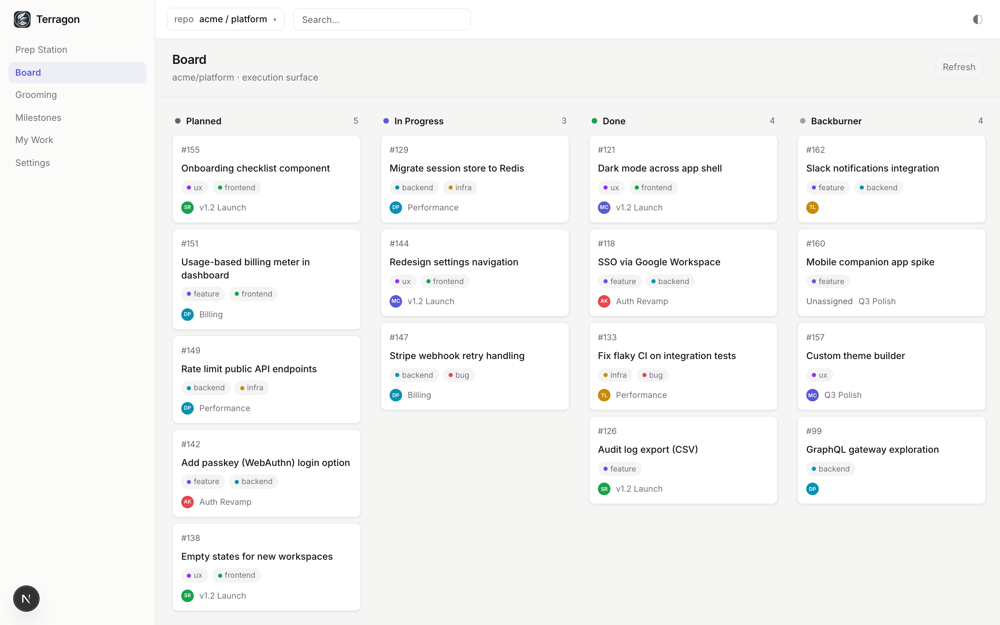
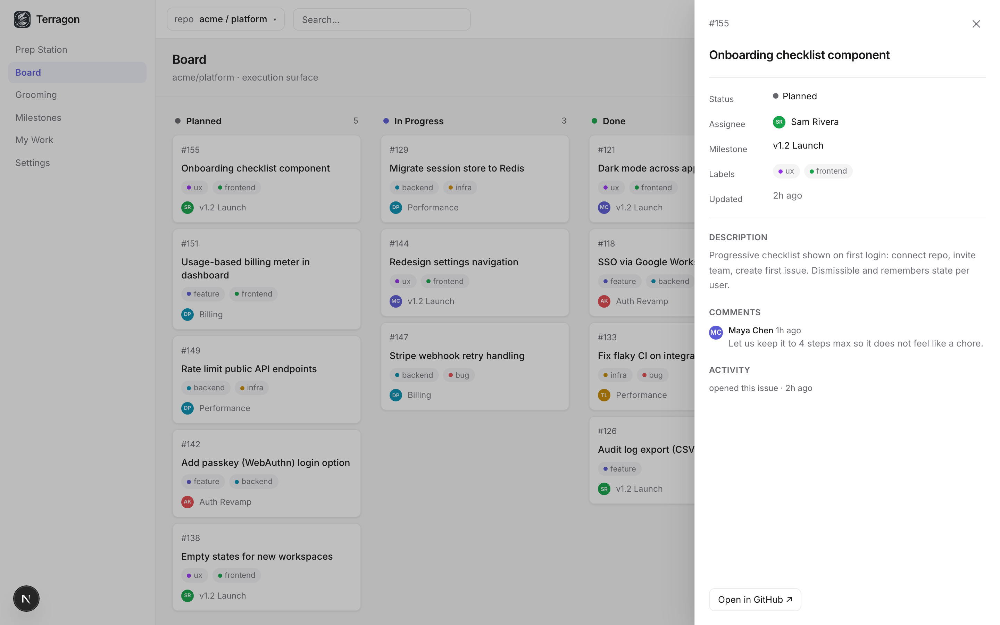
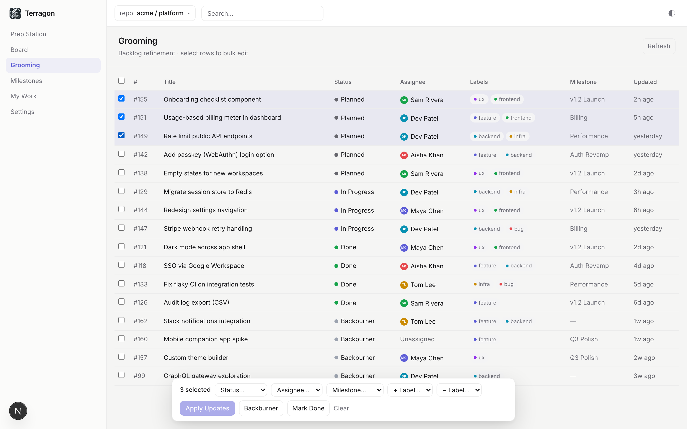

A Kanban board and grooming workspace for GitHub Issues
No second system to keep in sync — your issues stay in GitHub, and so does every change you make. Drag to set status, groom in batches, and ship.
Apache-2.0 licensed · self-hosted · your tokens never leave your server

Everything you need to run the work
A focused workspace on top of Issues — not a replacement for them.
Live Kanban board
Your repo's issues resolved into Planned · In Progress · Done · Backburner. Drag to change status — it updates GitHub labels and closes or reopens the issue.
Grooming & batch edits
Multi-select issues and apply changes in one action, with partial-success reporting — "6 of 7 updated" — never a silent failure.
Filter, sort & search
Narrow the board by assignee, label, or milestone; sort within columns; jump anywhere with the ⌘K command palette.
Inline issue drawer
Edit title, body, assignee, labels, milestone, and status without leaving the board. Writes straight through to GitHub.
Made to feel calm
Light / System / Dark themes, comfortable or compact density, and a quiet progress bar instead of frozen pages.
GitHub is the source of truth
Terragon stores only settings and preferences. Everything meaningful lives in your repo — leave any time, lose nothing.
Your issues are the task system. Terragon is the surface.
All GitHub access happens server-side and your access tokens are encrypted at rest — they never reach the browser. There's no duplicate database of issues to drift out of sync.
Up and running in minutes
Sign in, pick a repo, and start working the board.
Sign in with GitHub
OAuth via Auth.js. Grant access to the repos you choose.
Pick a repository
Terragon loads its issues and resolves them into columns.
Work the board
Drag, groom, and edit — changes write straight to GitHub.
GitHub stays canonical
Status lives in terragon/* labels on each issue.
See it in action
The board, the issue drawer, and grooming mode.


Bring calm to your GitHub workflow
Open source and self-hosted. Clone it, point it at your repos, and ship.